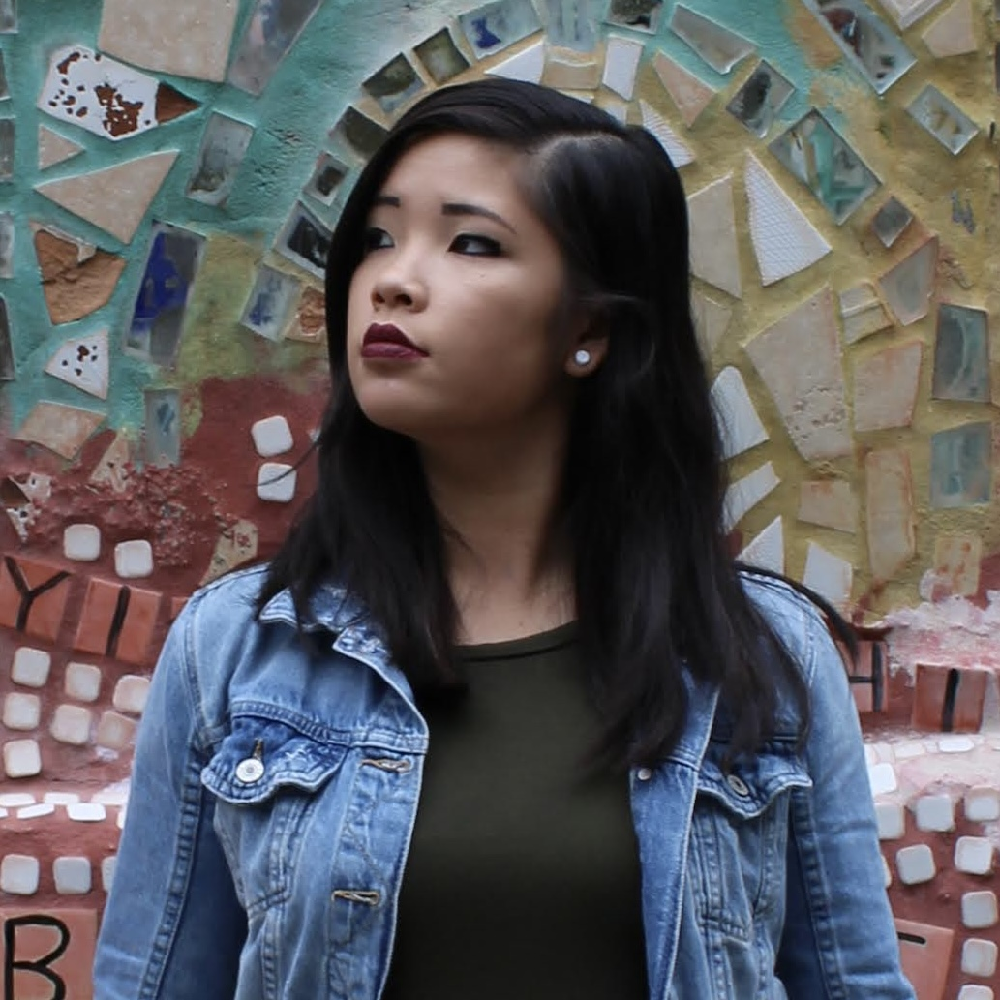

I am currently a PhD candidate in Computer Science at University of Victoria, supervised by George Tzanetakis. I earned my Masters in Computer Science as a member of the Interactive Audio Lab at Northwestern University under the supervision of Bryan Pardo. My research focuses on incorporating musical style and performance into machine learning systems for music.
You can email me at erumbold [at] uvic [dot] ca.